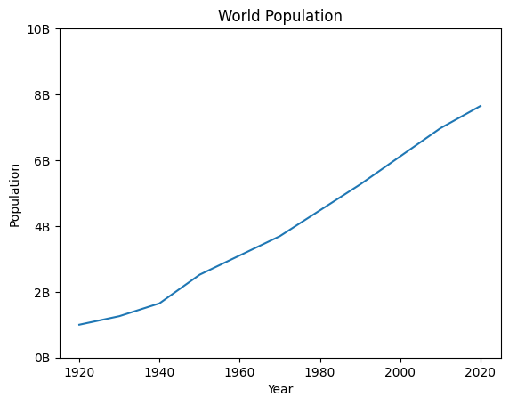

Matplotlib#
Basics Of Plotting#
import matplotlib.pyplot as plt
year = [1950, 1970, 1990, 2010]
pop = [2.519, 3.692, 5.263, 6.972] # population in billions
# plot as a line chart
plt.plot(year, pop)
[<matplotlib.lines.Line2D at 0x7f3914148d90>]
# plot as scatter plot
plt.scatter(year, pop)
<matplotlib.collections.PathCollection at 0x7f39140966a0>
help(plt.hist)
Help on function hist in module matplotlib.pyplot:
hist(x, bins=None, range=None, density=False, weights=None, cumulative=False, bottom=None, histtype='bar', align='mid', orientation='vertical', rwidth=None, log=False, color=None, label=None, stacked=False, *, data=None, **kwargs)
Compute and plot a histogram.
This method uses `numpy.histogram` to bin the data in *x* and count the
number of values in each bin, then draws the distribution either as a
`.BarContainer` or `.Polygon`. The *bins*, *range*, *density*, and
*weights* parameters are forwarded to `numpy.histogram`.
If the data has already been binned and counted, use `~.bar` or
`~.stairs` to plot the distribution::
counts, bins = np.histogram(x)
plt.stairs(counts, bins)
Alternatively, plot pre-computed bins and counts using ``hist()`` by
treating each bin as a single point with a weight equal to its count::
plt.hist(bins[:-1], bins, weights=counts)
The data input *x* can be a singular array, a list of datasets of
potentially different lengths ([*x0*, *x1*, ...]), or a 2D ndarray in
which each column is a dataset. Note that the ndarray form is
transposed relative to the list form. If the input is an array, then
the return value is a tuple (*n*, *bins*, *patches*); if the input is a
sequence of arrays, then the return value is a tuple
([*n0*, *n1*, ...], *bins*, [*patches0*, *patches1*, ...]).
Masked arrays are not supported.
Parameters
----------
x : (n,) array or sequence of (n,) arrays
Input values, this takes either a single array or a sequence of
arrays which are not required to be of the same length.
bins : int or sequence or str, default: :rc:`hist.bins`
If *bins* is an integer, it defines the number of equal-width bins
in the range.
If *bins* is a sequence, it defines the bin edges, including the
left edge of the first bin and the right edge of the last bin;
in this case, bins may be unequally spaced. All but the last
(righthand-most) bin is half-open. In other words, if *bins* is::
[1, 2, 3, 4]
then the first bin is ``[1, 2)`` (including 1, but excluding 2) and
the second ``[2, 3)``. The last bin, however, is ``[3, 4]``, which
*includes* 4.
If *bins* is a string, it is one of the binning strategies
supported by `numpy.histogram_bin_edges`: 'auto', 'fd', 'doane',
'scott', 'stone', 'rice', 'sturges', or 'sqrt'.
range : tuple or None, default: None
The lower and upper range of the bins. Lower and upper outliers
are ignored. If not provided, *range* is ``(x.min(), x.max())``.
Range has no effect if *bins* is a sequence.
If *bins* is a sequence or *range* is specified, autoscaling
is based on the specified bin range instead of the
range of x.
density : bool, default: False
If ``True``, draw and return a probability density: each bin
will display the bin's raw count divided by the total number of
counts *and the bin width*
(``density = counts / (sum(counts) * np.diff(bins))``),
so that the area under the histogram integrates to 1
(``np.sum(density * np.diff(bins)) == 1``).
If *stacked* is also ``True``, the sum of the histograms is
normalized to 1.
weights : (n,) array-like or None, default: None
An array of weights, of the same shape as *x*. Each value in
*x* only contributes its associated weight towards the bin count
(instead of 1). If *density* is ``True``, the weights are
normalized, so that the integral of the density over the range
remains 1.
cumulative : bool or -1, default: False
If ``True``, then a histogram is computed where each bin gives the
counts in that bin plus all bins for smaller values. The last bin
gives the total number of datapoints.
If *density* is also ``True`` then the histogram is normalized such
that the last bin equals 1.
If *cumulative* is a number less than 0 (e.g., -1), the direction
of accumulation is reversed. In this case, if *density* is also
``True``, then the histogram is normalized such that the first bin
equals 1.
bottom : array-like, scalar, or None, default: None
Location of the bottom of each bin, i.e. bins are drawn from
``bottom`` to ``bottom + hist(x, bins)`` If a scalar, the bottom
of each bin is shifted by the same amount. If an array, each bin
is shifted independently and the length of bottom must match the
number of bins. If None, defaults to 0.
histtype : {'bar', 'barstacked', 'step', 'stepfilled'}, default: 'bar'
The type of histogram to draw.
- 'bar' is a traditional bar-type histogram. If multiple data
are given the bars are arranged side by side.
- 'barstacked' is a bar-type histogram where multiple
data are stacked on top of each other.
- 'step' generates a lineplot that is by default unfilled.
- 'stepfilled' generates a lineplot that is by default filled.
align : {'left', 'mid', 'right'}, default: 'mid'
The horizontal alignment of the histogram bars.
- 'left': bars are centered on the left bin edges.
- 'mid': bars are centered between the bin edges.
- 'right': bars are centered on the right bin edges.
orientation : {'vertical', 'horizontal'}, default: 'vertical'
If 'horizontal', `~.Axes.barh` will be used for bar-type histograms
and the *bottom* kwarg will be the left edges.
rwidth : float or None, default: None
The relative width of the bars as a fraction of the bin width. If
``None``, automatically compute the width.
Ignored if *histtype* is 'step' or 'stepfilled'.
log : bool, default: False
If ``True``, the histogram axis will be set to a log scale.
color : color or array-like of colors or None, default: None
Color or sequence of colors, one per dataset. Default (``None``)
uses the standard line color sequence.
label : str or None, default: None
String, or sequence of strings to match multiple datasets. Bar
charts yield multiple patches per dataset, but only the first gets
the label, so that `~.Axes.legend` will work as expected.
stacked : bool, default: False
If ``True``, multiple data are stacked on top of each other If
``False`` multiple data are arranged side by side if histtype is
'bar' or on top of each other if histtype is 'step'
Returns
-------
n : array or list of arrays
The values of the histogram bins. See *density* and *weights* for a
description of the possible semantics. If input *x* is an array,
then this is an array of length *nbins*. If input is a sequence of
arrays ``[data1, data2, ...]``, then this is a list of arrays with
the values of the histograms for each of the arrays in the same
order. The dtype of the array *n* (or of its element arrays) will
always be float even if no weighting or normalization is used.
bins : array
The edges of the bins. Length nbins + 1 (nbins left edges and right
edge of last bin). Always a single array even when multiple data
sets are passed in.
patches : `.BarContainer` or list of a single `.Polygon` or list of such objects
Container of individual artists used to create the histogram
or list of such containers if there are multiple input datasets.
Other Parameters
----------------
data : indexable object, optional
If given, the following parameters also accept a string ``s``, which is
interpreted as ``data[s]`` (unless this raises an exception):
*x*, *weights*
**kwargs
`~matplotlib.patches.Patch` properties
See Also
--------
hist2d : 2D histogram with rectangular bins
hexbin : 2D histogram with hexagonal bins
Notes
-----
For large numbers of bins (>1000), plotting can be significantly faster
if *histtype* is set to 'step' or 'stepfilled' rather than 'bar' or
'barstacked'.
values = [0,0.2,1,0.3,1.3,2.6,1.5,3.2,4,4.2,3.1,1.2,4.8,3.9,6,5.1,4.2,5.7,0.4]
plt.hist(values, bins = 3)
(array([8., 4., 7.]),
array([0., 2., 4., 6.]),
<BarContainer object of 3 artists>)
Customization#
year = [1950, 1970, 1990, 2010, 2020]
pop = [2.519, 3.692, 5.263, 6.972, 7.65]
year = [1920, 1930, 1940] + year
pop = [1.0, 1.26, 1.65] + pop
plt.plot(year, pop)
# Lables
plt.xlabel('Year')
plt.ylabel('Population')
# Title
plt.title('World Population')
# Scaling of the axes
plt.yticks([0,2,4,6,8,10],['0B', '2B', '4B', '6B', '8B', '10B'])
plt.show()
